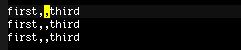
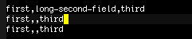
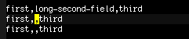
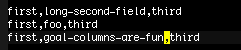

emacs学习
Table of Contents
1 `ESC'按键代替`M-'
- 在图形方式下，几个emacs默认组合键无法输入，被操作系统拦截，你可以在组合键开始
按<ESC>键，代替有Meta控制键的输入
- M-<TAB>：绑定'completion-at-point'，在不同模式中绑定不同命令，如c-mode中， 绑定'complete-symbol'，emacs-lisp-mode中。可用'ESC TAB'
- M-<SPC>：'just-one-space'，删除所有空格，只留一个。可用'ESC SPC'
- C-M-d：'down-list'，光标移到括号处，如果有参数n，移到第n个括号处。可 用'ESC C-d'
- C-M-l：'reposition-window'，让当前定义的函数完全显示。可用'ESC C-l'
- 查看以某前缀输入的所有组合键，先输入一个前缀，如：C-x，再输入'C-h'或'<F1>，可 列出所有以C-x为前缀的组合键，有一个例外是以`M-'为前缀，输入'<ESC> C-h'相当 于'C-M-h'。如想看`M-'为前的组合键列表可输入'<ESC> <F1>'。
2 长度超过显示宽度的文字行
- 一行文字有两种定义，loginc line：以回车作为一行的分界，是真实的一行；screen line：以显示区域分界，一行长度超过显示区域的logic line可以分成多个screen line。
- 当文字行长度超过显示宽度，黙认超过显示区域的不显示，在右边缘显示一个小箭头， 表示右边还有内容；用toggle-truncate-lines命令可以折叠行，由一个logic line变成 多个screen line显示，在折叠行右边缘和左边缘显示弯曲的小箭头。当按C-n或C-p时， 光标在screen line行移动，设置line-move-visual为nil，按C-n或C-p时，光标在 logic line行移动。如果line-move-visual设为nil，再将track-eol设为non-nil，当 光标在行尾，按C-n或C-p，移动到上行或下行时，光标依然在行尾。
- 还有一种方式，使用visual-line-mode，当文字行长度超过显示宽度，logic line自动 被分成多个screen line，且在折叠行右边缘左边缘没有任何特殊标记，在这个模式下， 视觉上看不出被分成logic line被分成多个screen line。按C-n C-p在screen line移 动，但按C-k，删除的是logic line，visual-line-mode是开关性质，再按一次就关闭 visual-line-mode了。
3 控制point
3.1 M-r
- 移动光标到窗体最左边，按第一次时，光标移到中间行的最左边，按第二次时，光标移 到窗体顶行的最左边，按第三次时，光标移到末行的最左边，依次循环。前缀指定移到 的行数，窗体顶行按0计算，前缀是负数从末行倒推计算。
3.2 M-C-v, M-C-V
- 让另一个window上下滚屏
3.3 C-x C-n (set-goal-column)
- 通常，不怎么见人用set-goal-column，定位毎一行水平位置，但我感觉挺方便，也经 常使用，这里，简单说明一下使用方法。
- 如果有一个以逗号分隔的文本，我们要在两个逗号中间插入内容，先把光标移到第一行 的两个逗号之间，水平位置显示6（毎一行开头从0开始计算）。 
- 现在输入一些文字，然后按C-n移到下一行。 
- 由于输入了文字，使光标在第一行移到了23，当我们移到下一行时，光标跑到第二行 的最后。但我们想要光标移到第二行时还在水平位置，继续输入，怎么办？让我们开 始用C-x C-n(set-goal-column)吧。
- 现在，我们先恢复最初的文本，把光标移到第一行的两个逗号之间，然后按C-x C-n（set-goal-column），输入一些文字，输入再按C-n移到下一行，光标水移到了第 二行的两个逗号之间。 
- 依次，在第二行输入文字，移到第三行，光标依然在两个逗号之间。当有很多行时，我 们能很快输入。 
- 关闭goal column，可以用C-u C-x C-n。
4 清理buffer中的空格、空行
- 常从w3m中复制c代码，毎行后面都跟着很多的空格，有时行与行之间有很多空行。
- 去除一行后面多余空格，只留一个空格，可以用`ESC SPC',去除行与行之间多余空行， 只留一个空行，可以用`delete-blank-lines'。
- 但毎一行这样做很麻烦，我想自动处理整个buffer，实现
- 去除一行后面多余空格，只留一个空格
- 去除行与行之间多余空行，只留一个空行
5 搜索与替换
5.1 当前buffer中的搜索
- `C-s' `C-r'，向前，向后搜索，光标移跟着移动。如`C-s FOO'，光标移到FOO后面
- `ENT'，退出搜索，光标停在退出之前的位置，当前位置放入mark-ring中；`C-g'，退 出搜索，光标返回搜索前位置
- 搜索内容都是小写字母，搜索时不区分大小写；搜索内容只要有一个大写字母，搜索 时区分大小写，将`case-fold-search'设为`nil'，无论什么内容，搜索时都区分大小写
- 搜索时常用的操作
- C-w(isearch-yank-word-or-charC-i)：从buffer中取得char或word粘贴到搜索词之后
- C-y(isearch-yank-line)：从buffer中取得一行粘贴到搜索词之后
- C-s C-w：以光标后的一个单词(自动转为小写)做为搜索词立即开始搜索
- M-c(isearch-toggle-case-fold)：打开或关毕搜索大小写敏感
- M-e(isearch-edit-string)：光标跳到minibuffer，修改搜索词
- M-n(isearch-ring-advance)：搜索时循环查找后面的搜索词
- M-p(isearch-ring-retreat)：搜索时循环查找前面的搜索词
- M-r(isearch-toggle-regexp)：打开或关闭正则方式搜索
- M-s w(isearch-toggle-word)：以单词方式搜索
- M-y(isearch-yank-kill)：将kill ring中的内容放到搜索词中
- C-M-w 删除搜索词中最后一个字符
- C-M-y 将当前光标后一个字符复制到搜索词后
5.2 当前buffer中的regexp搜索
- 用regexp-builder可以方便的测试正则表达式
- `*' `+'：贪婪算法符，`*'`+'首先尽可能匹配最多的内容，后面的项再接着匹配，如 果失败，开始回溯，尝试减少`*'`+'的匹配，再匹配后面的项。如搜索`ca*ar'，匹配 `caaar'时，`a*'第一次匹配了三个`a',只剩`r',第一次失败了，下一次尝试，`a*'匹 配两个`a'，后面的'ar'也匹配成功，就搜索到了`caaar'
- `*?' `+?'：非贪婪算法符，`*?'`+?'首先匹配最少的内容，后面的项再接着匹配，如 果失败，开始回溯，尝试增加`*'`+'的匹配，再匹配后面的项。比较`ab*'和`ab*?'， 都能匹配`a'，`ab*'还能匹配`abbbb'，但`ab*?'仅能匹配到`a'；`ab*c'和`ab*?c'都能 匹配`abbbc'
- \{0,1\}相当于`?'；\{1,\}相当于`+'；\{0,\}相当于`*'
- […]：字符集合，所有在集合内的字符都能匹配，如[ab]+，同时匹配多个连续 `a'，多个连续`b'；各种字符都能放入集合，有三个字符放入集合的位置有要求，`]' `-' `^'，`]'要放在集合的的第一个位置，`-'要放在集合的第一个或最后一个位 置，`^'除了在集合的第一个位置，别的位置都可以(`^'放在集合的第一个位置有特殊 意义)
- [^…]：反字符集合，所有不在集合的字符都能匹配，如[^a-z0-9A-Z]，能匹配除了 大小写字母、数字以处的所有字符
- `\'：用于引用特殊字符，如`\*' `\$' `\['等有特殊含义的字符，如 要匹配`a$b' `a*b' `a[b'，要用`a\$b' `a\$b' `a\[b'；注意：`\'不能引用 `]'`-'，如[^\]，含义是匹配除了`\'以外的所单字符
- `\'：用于以`\'开始有特殊意义的字符序列
- `\|'：连接两个表达式A和B，A和B之间是或的关系，如`abc\|inf'，匹配`abc'和`inf'
- `\(…\)' `\(?:…\)' `\D'：分组和引用。`\(…\)'即有分组，又有引用功能，可用`\D' 引用前面出现的分组；`\(?:…\)'仅有分组功能；`\D'用1~9个数字表示表达式 前面出现的分组内容
- `\w'匹配单词字符，`\<'匹配单词开始，`\>'匹配单词结束， `\b'匹配单词开始和 结束
5.3 当前buffer中的替换
- M-x replace-string <RET> foo <RET> bar <RET>
- 替换小写`foo'为`bar'时，替换时自动转换大小写，将`FOO'替换为`BAR'，`Foo'替换 为`Bar'，自动识别全小写，全大写，首字母大写替换。不是这三种情况的替换为 `bar',如`fOO'被替换为`bar'
- 如果将`case-replace'设为`nil'，替换将不转换大小写，上面的操作将 `foo'`FOO'`Foo'都替换为`bar'
- M-x replace-regexp <RET> REGEXP <RET> NEWSTRING <RET>
- REGEXP和NEWSTRING都是正则表达式，NEWSTRING包含一些以`\'开始有特殊意义的 字符序列，\&代表整个REGEXP；\D(数字)代表REGEXP中的第`D'个分组内容；\?：让替 换毎次都询问
- 如要将`M-w M-s M-y M-u'替换为`C-M-w C-M-s C-M-y C-M-u'，执行 `replace-regexp <RET> M-[wsyu]' <RET> C-\& <RET>
- `M-%(query-replace)'`C-M-%(query-replace-regexp)'询问式替换
5.4 多个文件中的搜索
- M-x multi-occur <RET> BUFFERS <RET> REGEXP <RET>
- 可以选择多个文件，在多个文件用正则表达式搜索
- M-x multi-occur-in-matching-buffers <RET> BUFREGEXP <RET> REGEXP <RET>
- 类似multi-occur，只是用正则表达式在当前打开的文件中选择
- M-x flush-lines <RET> REGEXP <RET>
- 删除所有匹配REGEXP的行
- M-x keep-lines <RET> REGEXP <RET>
- 与flush-lines相反，保留匹配的行，删除所有未匹配的行
- dired中，按Q
6 dired
- flag标记与mark标记
flag标记用于删除文件(`x')操作，mark标记用于其他操作；有flag标记的文件前显示
`D'，有mark标记的文件前显示`*'；文件只能有一个标记，flag或mark
- `d'(dired-flag-file-deletion)：给当前文件置`flag'
- `#'：给所有自动保存文件置`flag'
- `~'：给所有备份文性置`flag'
- `% &'：给所有废弃文件置`flag'，如.toc .log .aux(latex中的临时文件)，废弃 文件由变量`dired-garbage-files-regexp'定义，默认值是 "\\(?:\\.\\(?:aux\\|bak\\|dvi\\|log\\|orig\\|rej\\|toc\\)\\)\\'"
- `% d REGEXP <RET>'：给所有匹配正则表达式的文件置`flag'
- `x'(dired-do-flagged-delete)：删除有`flag'的文件
- `m' `* m'：给当前文件置`mark'
- `* *'：给所有可执行文件置`mark'
- `* @'：给所有symbolic links文件置`mark'
- `* /'：给所有文件夹置`mark'
- a`* s'：给所有文件和文件夹置`mark'，除了`.'和`..'文件夹
- `t'`* t'(dired-toggle-marks)：所有没有`mark'的文件，置`mark',所有已有 `mark'的文件，取消`mark'
- `% m REGEXP <RET>'`* % REGEXP <RET>'：给所有匹配正则表达式的文件置`mark'， 与`% d'类似，只是`% m'置的是`mark'，`% d'置的是`flag'
- `% g REGEXP <RET>'：给所有内容匹配正则表达式的文件置`mark'
- `C-x u'`C-'`C-/'：撤消上次标记操作
- `u'`* u'(dired-unmark)：取消当前文件标记
- `U'`* !'：取消所有文件标记
- `<DEL>'`* <DEL>'(dired-unmark-backward)：移到上一行，并取消`flag'或mark
- 文件操作
- n <SPC> C-n：dired-next-line，p C-p：dired-previous-line
- `* C-n'`M-}'(dired-next-marked-file)：移到下一个已有标记的文件
- `* C-p'`M-{'(dired-prev-marked-file)：移到上一个已有标记的文件
- `f' `e' `<RET>'：访问文件，类似于`C-x C-f'
- `o'：在另一个window中打开文件，类似于`C-x 4 C-f'
- `v'：以只读方式打开文件
- `i'：显示子目录
- `'：访问父目录
- `g'：刷新Dired buffer
- 命令
命令如有前缀参数N，命令操作从当前文件开始的N个文件；如果有文件
有`mark'标记，操作所有`mark'标记的文件；否则操作当前文件
- `k'：隐藏文件
- `C NEW <RET>'(dired-to-copy)：复制文件，相当于shell cp命令
- `D'(dired-do-delete)：删除文件，相当于shell rm命令
- `R NEW <RET>'(dired-do-rename)：重命名文件，相当于shell mv命令
- `H NEW <RET>'(dired-do-hardlink)：建立hardlink文件，相当于shell ln命令
- `S NEW <RET>'(dired-do-symlink)：建立symlink文件，相当于shell ln -s命令
- `M MODESPEC <RET>'(dired-do-chmod)：修改文件权限，相当于shell chmod命令
- `G NEWGROUP <RET>'(dired-do-chgrp)：修改文件群组，相当于shell chgrp命令
- `O NEWOWNER <RET>'(dired-do-chown)：修改文件所有者，相当于shell chown命令
- `T TIMESTAMP <RET>'(dired-do-touch)：更改文件的修改时间，相当于shell touch 命令
- `L'(dired-do-load)：加载emacs lisp文件
- `B'(dired-do-byte-compile)：编译emacs lisp文件
- `A REGEXP <RET>'(dired-do-search)：在文件内容中搜索匹配正则表达式，类似于 `tags-search'命令，光标停在搜索成功位置，用`M-,'继续搜索
- `Q REGEXP <RET>'(dired-do-query-replace-regexp)：在文件中搜索替换，类似于 `tags-query-replace'，每次替换都询问，用`M-,'继续搜索替换
- `M-s a C-s'(dired-do-isearch)：在多个文件中搜索
- `M-s a M-C-s'(dired-do-isearch-regexp)：在多个文件中搜索匹配正则表头式
- `w'(dired-copy-filename-as-kill)：将有mark的文件名复制到kill ring中
- 子目录操作
当Dired buffer中有子目录显示，以下命令用于目录之间移动
- `C-M-n'：移到下一个目录
- `C-M-p'：移到下一个目录
- `C-M-u'：移到父目录
- `C-M-d'：移到第一个子目录
- `$'：隐藏或显示当前目录内容
- `M-$'：隐藏或显示所有目录内容
7 bookmark
- 基本操作
- `C-x r m'(bookmark-set)：将当前位置设成新的书签
- `C-x r b'(bookmark-jump)：直接跳到书签指向的文件
- `C-x r l'(bookmark-bmenu-list)：显示当前书签
- bookmark-delete：删除书签
- bookmark-save：保存当前书签
- bookmark-save：读取当前书签
- `*Bookmark List*'中的操作
- `a'：显示书签注解
- `A'：显示所有书签注解
- `d'`x'：用d作记号，x删除
- `m'`v'：用m作记号，v显示
- `C-o'：在另一个window中显示书签指向的文件
- `r'：书签改名
8 github
- 用git clone git@github.com:mojombo/mojombo.github.com.git命令克隆，应该不用毎 次输入用户名